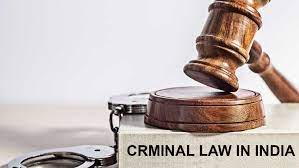

What is Criminal Law?
Criminal Law Definition
Criminal law is an area of the law that concerns crimes and laws applied to those who commit them. There are two main types of criminal law offenses: felonies and misdemeanors. The most serious crimes are felonies, which include offenses like murder, robbery, and arson. Misdemeanors are more minor offenses, like traffic violations or petty thefts. According to the FBI, the most common crimes are larceny (theft), burglary, and aggravated assault. There are federal criminal laws and state-specific ones. A penalty for a crime depends on what kind of crime you’ve committed, where you committed it, how involved you were with the crime, and whether this is your first criminal offense. What Do People Who Work in Criminal Law Do? Criminal lawyers apply criminal law to defend clients accused of a crime or hold those who have committed a crime accountable. Much of their work involves going to court to represent their various clients. When they’re not in court, they might research a case and the applicable law or communicate with their clients to update them about their next court appearance. “A typical day for me starts with a 5 a.m. workout, bond hearings, or court at 9 a.m., running to the next court in one of four jurisdictions,” Amy Lawrence, criminal defense lawyer at The Lovely Law Firm Injury Lawyers, says. “It goes all day with calls to clients or jail visits in between hearings. My last hearing begins at 5 p.m., and I’m home by 7 p.m. if I’m lucky.” >>MORE: Experience a day in the life of a criminal lawyer with Leo Cussen’s Criminal Law Virtual Experience Program.
Criminal Law Job Titles?
.jpg)
There are different types of criminal lawyers depending on who the lawyer is representing. Defense attorneys represent defendants accused of a crime. They may be a private attorney, which means the client pays for their services, or a public defender, who serves clients who can’t afford their own lawyers. On the opposite side, prosecuting attorneys represent the government. Prosecuting attorneys may work at the local, state, or federal level. In addition to working as a criminal lawyer, many different jobs in the criminal justice field interact with criminal law daily but do not require a law degree. Examples of these jobs include:
How to Get Into Criminal Law
Getting into criminal law requires advanced education, examination, and a mix of hard law skills and soft skills. Education To become a criminal lawyer, you’ll need an advanced law degree. First, you must earn an undergraduate degree. There’s no one required degree, but a major in a related field, like criminal justice, can help you learn more about the field with law enforcement, investigations, and court courses. After you complete your bachelor’s degree, you’ll likely have to take the Law School Admission Test (LSAT). Most law schools in the U.S. require this exam. The LSAT tests you on skills you’ll need in law school, including reading comprehension, writing, and analytical skills. Once in law school, you’ll take core law courses. Many of these will touch on general criminal law practices. In addition, you can take more specific criminal law courses that may focus on certain types of crime or the politics of criminal law. For example, Columbia Law School offers courses in “Policing the Police” and “Civil Liberties and the Response to Terrorism.”
Issues with IPC
There are different types of criminal lawyers depending on who the lawyer is representing. Defense attorneys represent defendants accused of a crime. They may be a private attorney, which means the client pays for their services, or a public defender, who serves clients who can’t afford their own lawyers. On the opposite side, prosecuting attorneys represent the government. Prosecuting attorneys may work at the local, state, or federal level. In addition to working as a criminal lawyer, many different jobs in the criminal justice field interact with criminal law daily but do not require a law degree. Examples of these jobs include:
Recent Progress
Malimath Committee had faced criticism for its drawbacks, notably that the standard of evidence be reduced from “beyond reasonable doubt” to “clear and convincing”.[6][7] In the winter session of parliament, Minister of State for Home Affairs Ajay Kumar Mishra said the committee had been, "constituted under the chairpersonship of the Vice Chancellor, National Law University, Delhi to suggest reforms in the criminal laws".[citation needed] He further said that the suggestions that will be received and the report of the committee will be examined by the Ministry of Home Affairs in consultation with all stakeholders.